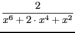
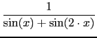

suivant: Primitive et intégrale définie
monter: Intégration
précédent: Intégration
Table des matières
Index
Primitive et intégrale définie : integrate int Int integrer integration
integrate (ou int) permettent de calculer une
primitive ou une intégrale définie. La seule différence entre ces deux
commandes est que integrate écrit avec le symbole
la réponse de la commande quest() qui suit l'évaluation de
integrate.
Par contre Int renvoie integrate sans l'évaluer : c'est pour
avoir la compatibilité avec Maple, lorsque l'on fait un calcul numérique
d'intégrales :
On tape :
evalf(Int(exp(x^2),x,0,1))
Ou on tape :
evalf(int(exp(x^2),x,0,1))
On obtient :
1.46265174591
integrate (ou int ou Int) a un, deux ou quatre arguments.
Exercice 1
Soit
f (
x) =

+ ln(

)
Calculer une primitive de f.
On tape :
int(x/(x^2-1)+ln((x+1)/(x-1)))
On trouve :
x*log((x+1)/(x-1))+log(x^2-1)+1/2*log(2*x^2/2-1)
Ou bien on définit la fonction f en tapant :
f(x):=x/(x^2-1)+ln((x+1)/(x-1))
puis on tape :
int(f(x))
On obtient bien sûr le même résultat.
Attention
Pour Xcas, log est égal à ln (logarithme népérien) et log10 est le logarithme en base 10.
Exercice 2
Calculer :
 dx
On tape :
int(2/(x^6+2*x^4+x^2))
On trouve :
2*((3*x^2+2)/(-(2*(x^3+x)))+-3/2*atan(x))
Exercice 3
Calculer :
 dx
On tape :
integrate(1/(sin(x)+sin(2*x )))
On trouve :
(1/-3*log((tan(x/2))^2-3)+1/12*log((tan(x/2))^2))*2
suivant: Primitive et intégrale définie
monter: Intégration
précédent: Intégration
Table des matières
Index
Documentation de giac écrite par Renée De Graeve